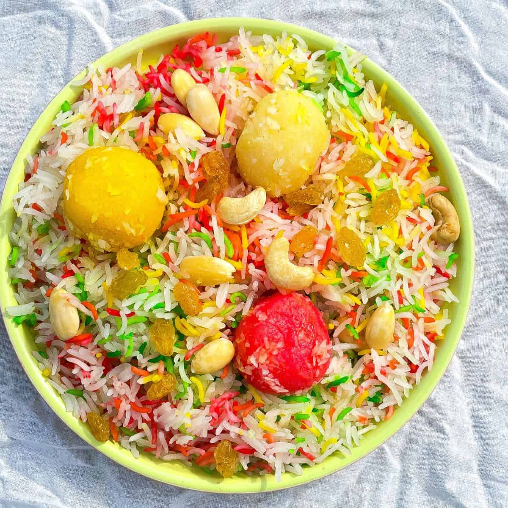

WELCOME TO KING OF RECIPE
We are here to provide you the best recipes of various cuisines.
Prawn Pilau Biryani Rice Have a delicious dinner ready on the table in no time with quick-cooking prawns and basmati rice. This is one of my favourites! |
Badami HalwaJust make sure they're not salted - a salted halwa is a very niche take on dessert, and I'm not quite sure I can endorse it. |
MutanjanMutanjan: The meat-and-rice dessert loved by Indian royals |
Sindhi Biryani Biryani is a lavish rice dish cooked in the South of Asia and also across the Middle East. |